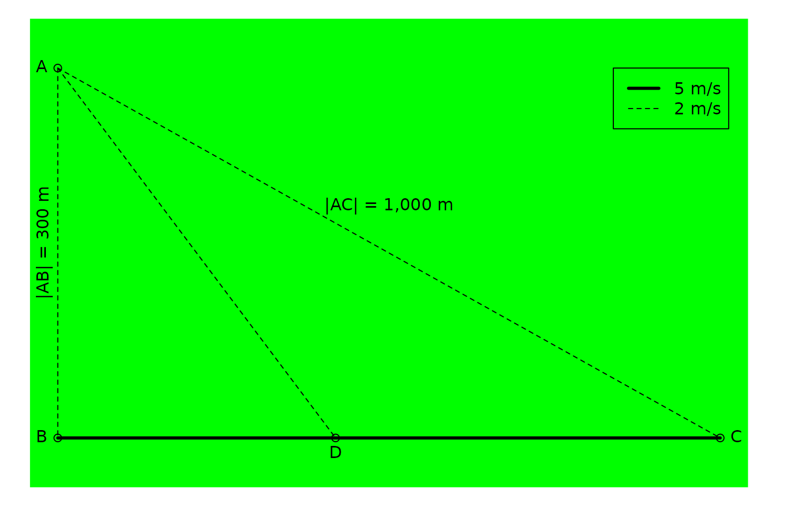
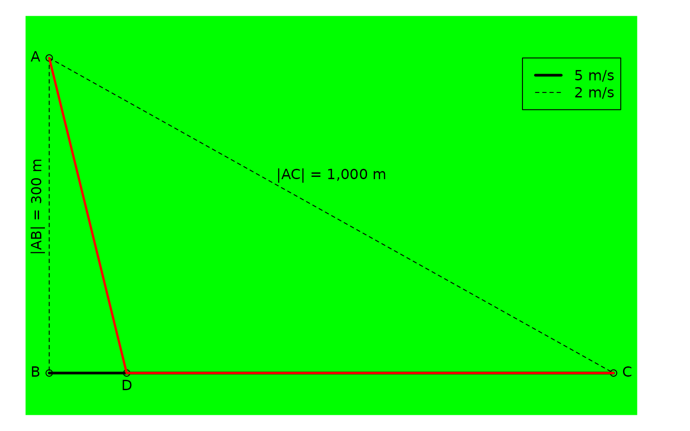

library(caracas)
A problem was posted by the Danish newspaper, Ingeniøren, and it goes like this:
You are in the middle of a dense forest located at \(A\). You need to get to \(C\) in the fastest way possible, and you can only change direction once. You can walk directly via \(AB\) to the dedicated walking path \(BC\) where you can walk fast, you can take the direct path through the forest (\(AC\)) where you have to walk slower, or cross through the forest to the dedicated walking path (\(AD\) and then \(DC\)).

Information given
- Distances
- \(|AB| =\) 300 m
- \(|AC| =\) 1,000 m
- Velocities
- \(v_{AB} = 2\) m/s
- \(v_{AD} = 2\) m/s
- \(v_{AC} = 2\) m/s
- \(v_{BC} = 5\) m/s
Length of line segments
We parameterise with \(k = |BD|\), the distance between \(B\) and \(D\). That is, how much to walk on fast walking path before crossing into the forest.
Formulating using caracas:
AB <- as_symbol('300') AB #> [caracas]: 300 AC <- as_symbol('1000') AC #> [caracas]: 1000 BC <- sqrt(AC^2 - AB^2) BC #> [caracas]: 100⋅√91 k <- symbol('k') # |BD| DC <- BC - k AD <- sqrt(AB^2 + k^2) AD #> [caracas]: ____________ #> ╱ 2 #> ╲╱ k + 90000
So for a distance of \(|AD|\), you travel by 5 m/s, and then for a distance of \(- k + 100 \sqrt{91}\) you travel by 2 m/s. Thus it takes \(\frac{\sqrt{k^{2} + 90000}}{2}\) to travel \(AD\) and \(- \frac{k}{5} + 20 \sqrt{91}\) to travel \(DC\).
The question is: What is the fastest way to get from \(A\) to \(C\)?
First, the total duration of the route is:
l <- AD/2 + DC/5 l #> [caracas]: ____________ #> ╱ 2 #> k ╲╱ k + 90000 #> - ─ + ─────────────── + 20⋅√91 #> 5 2
lfun <- as_r(l) lfun #> expression(-k/5 + sqrt(k^2 + 90000)/2 + 20 * sqrt(91)) ks <- seq(0, as_r(AC), length.out = 100) ls <- eval(lfun, list(k = ks)) plot(ks, ls, type = "l", xlab = "k", ylab = "Time A to C")

It looks like a minimum around \(k = 150\).
We find the analytical solution by first finding critical points:
dl <- der(l, k) dl #> [caracas]: k 1 #> ───────────────── - ─ #> ____________ 5 #> ╱ 2 #> 2⋅╲╱ k + 90000 crit_points <- solve_sys(dl, k) crit_points #> Solution 1: #> k = 200⋅√21 #> ─────── #> 7 best_k <- crit_points[[1]]$k best_k #> [caracas]: 200⋅√21 #> ─────── #> 7
The type of the critical point is found by considering the Hessian:
Thus the critical point is indeed a minimum as suggested by the plot.
The fastest route is thus obtained for \[ k = \frac{200 \sqrt{21}}{7} \approx 130.93 . \] It has a length of (in meters)
DC_best <- BC - best_k AD_best <- sqrt(AB^2 + best_k^2) AD_best #> [caracas]: 500⋅√21 #> ─────── #> 7 best_route <- AD_best + DC_best best_route #> [caracas]: 300⋅√21 #> ─────── + 100⋅√91 #> 7 as_r(best_route) #> [1] 1150.335
\[ \frac{300 \sqrt{21}}{7} + 100 \sqrt{91} \approx 1150.34 \] and takes (in seconds)
\[ 30 \sqrt{21} + 20 \sqrt{91} \approx 328.27 \]
The best route can be illustrated, too:
